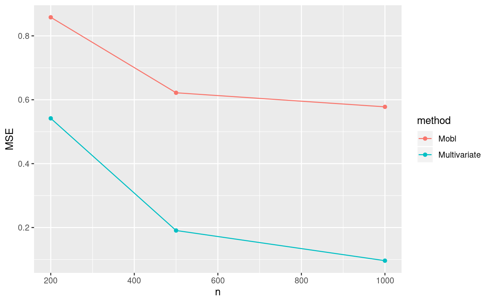

Examples_Simulation.RmdIn this section a simple simulation study is performed on subgroup identification using ``benchtm’’ package. We first generate the simuation data with \(f_{prog}(X) = 0.5*(X_3+X_7)\) and \(f_{pred}(X) = X_3\) with \(\beta_0 =0, \beta_1=2\). We fixed the total number of covariates as \(p=20\) and vary the sample size from \(n = 200\) to \(n=500,1000\). The simulation is replicated for 100 times in each scenario.
library(benchtm)
library(tidyverse)
set.seed(1111)
get_data = function(n,p,nsim){
dat <- vector("list", nsim)
for (i in 1:nsim){
X <- generate_X_dist(n, p, rho=0.5)
trt <- generate_trt(n, p_trt = 0.5)
temp_dat <- generate_y(X, trt, prog = "0.5*(X3+X7)",
pred = "X3", b0 = 0, b1 = 2,
type = "continuous", include_truth = TRUE,sigma_error = 1)
dat[[i]] = temp_dat
}
return(dat)
}
dat1 = get_data(n=200,p=20,nsim=100)
dat2 = get_data(n=500,p=20,nsim=100)
dat3 = get_data(n=1000,p=20,nsim=100)For demonstration, we only compare two different methods: multivariate and MOBl. Users could modify this part of the code by implementing their own method for a comparison.
library(glmnet)
library(dplyr)
var_select_lasso <- function(X, Y, trt, event, family){
ind <- trt == 0
X0 <- X[ind,]
X1 <- X[!ind,]
Y0 <- Y[ind]
Y1 <- Y[!ind]
X0 <- model.matrix(~., data=X0)[,-1]
X1 <- model.matrix(~., data=X1)[,-1]
if(family %in% c("binomial", "gaussian")){
fit0 <- cv.glmnet(X0, Y0, family = family)
fit1 <- cv.glmnet(X1, Y1, family = family)
}
if(family == "cox"){
event0 <- event[ind]
event1 <- event[!ind]
fit0 <- cv.glmnet(X0, Surv(Y0, event0), family = "cox")
fit1 <- cv.glmnet(X1, Surv(Y1, event1), family = "cox")
}
get_fit_vars <- function(fit){
cf <- coef(fit, s="lambda.1se")
## selected variables
vars <- rownames(cf)[abs(as.numeric(cf))>0]
## recover original variable names
get_varnames(vars)
}
union(get_fit_vars(fit0), get_fit_vars(fit1))
}
get_varnames <- function(vars){
## recovers original variable names from dummy coding and returns
## them ordered
vars <- lapply(paste0("X", 1:30), function(x){
vr <- any(startsWith(vars, x))
if(vr)
return(x)
})
as.character(do.call("c", vars))
}
get_var_back <- function(str){
## recovers original variable names from dummy coding and returns in
## original order
str <- sub("X1[A-Za-z]", "X1", str)
str <- sub("X2[A-Za-z]", "X2", str)
str <- sub("X3[A-Za-z]", "X3", str)
str <- sub("X4[A-Za-z]", "X4", str)
str <- sub("X5[A-Za-z]", "X5", str)
str <- sub("X6[A-Za-z]", "X6", str)
str <- sub("X7[A-Za-z]", "X7", str)
str <- sub("X8[A-Za-z]", "X8", str)
str <- sub("X9[A-Za-z]", "X9", str)
}
multivariate <- function(X, Y, trt, event, family){
## select union of variables that impact outcome on treatment and
## control (this will be a superset of the purely prognostic variables)
##vars <- var_select_lasso(X, Y, trt, event, family)
fitdat <- cbind(Y, trt, X)
all_vars <- paste0(colnames(X), collapse = "+")
#if(length(vars) == 0){ ## if no covariate identified
# form1 <- paste0("Y~trt+ trt:(", all_vars ,")")
# form2 <- paste0("Y~trt")
#}else{
#vars_form <- paste0(vars, collapse = "+")
form1 <- paste0("Y~trt+", all_vars, "+ trt:(", all_vars,")")
form2 <- paste0("Y~trt+", all_vars)
#}
## fit linear models and perform global interaction test
if(family == "gaussian"){
fit1 <- lm(as.formula(form1), data=fitdat)
fit2 <- lm(as.formula(form2), data=fitdat)
test <- anova(fit2, fit1)[2,6]
## top predictive variables
scf <- car::Anova(fit1, type=3)
nams <- rownames(scf)
ind <- grep("trt:X", nams)
pred_vars <- substring(nams[ind], 5)
p_inter <- scf[ind,4]
ord <- (order(p_inter))
top_vars <- pred_vars[ord]
## predict individual treatment effects
pred1 <- predict(fit1, newdata=cbind(trt=1,X))
pred0 <- predict(fit1, newdata=cbind(trt=0,X))
tau_hat <- pred1-pred0
}
if(family == "binomial"){
fit1 <- glm(as.formula(form1), data=fitdat, family = binomial)
fit2 <- glm(as.formula(form2), data=fitdat, family = binomial)
test <- anova(fit2, fit1,test="Chisq")[2,5]
## top predictive variables
scf <- car::Anova(fit1, type=3)
nams <- rownames(scf)
ind <- grep("trt:X", nams)
pred_vars <- substring(nams[ind], 5)
p_inter <- scf[ind,3]
ord <- (order(p_inter))
top_vars <- pred_vars[ord]
## predict individual treatment effects
pred1 <- predict(fit1, newdata=cbind(trt=1,X), type = "link")
pred0 <- predict(fit1, newdata=cbind(trt=0,X), type = "link")
tau_hat <- pred1-pred0
}
if(family == "cox"){
form1 <- sub("Y", "Surv(Y, event)", form1)
form2 <- sub("Y", "Surv(Y, event)", form2)
fit1 <- survival::coxph(as.formula(form1), data=fitdat)
fit2 <- survival::coxph(as.formula(form2), data=fitdat)
test <- anova(fit2, fit1, test="Chisq")$'P(>|Chi|)'[2]
## top predictive variables
nams <- names(coef(fit1))
ind <- grep("trt:X", nams)
pred_vars <- substring(nams[ind], 5)
p_inter <- summary(fit1)$coefficients[ind,5]
ord <- (order(p_inter))
top_vars <- pred_vars[ord]
## predict individual treatment effects
tau_hat <- NULL
}
## test significant?
sub_discover <- as.numeric(test < 0.10)
## predict individual treatment effects
return(list(sub_discover = sub_discover,
top_vars = get_var_back(top_vars),
est_trt_effect = tau_hat))
}
var_select_lasso_tree <- function(X, Y, trt, event, family){
ind <- trt == 0
X0 <- X[ind,]
X1 <- X[!ind,]
Y0 <- Y[ind]
Y1 <- Y[!ind]
X0 <- model.matrix(~., data=X0)[,-1]
X1 <- model.matrix(~., data=X1)[,-1]
if(family %in% c("binomial", "gaussian")){
fit0 <- glmnet::cv.glmnet(X0, Y0, family = family)
fit1 <- glmnet::cv.glmnet(X1, Y1, family = family)
}
if(family == "cox"){
event0 <- event[ind]
event1 <- event[!ind]
fit0 <- glmnet::cv.glmnet(X0, Surv(Y0, event0), family = "cox")
fit1 <- glmnet::cv.glmnet(X1, Surv(Y1, event1), family = "cox")
}
get_fit_vars <- function(fit){
cf <- coef(fit, s="lambda.1se")
## selected variables
vars <- rownames(cf)[abs(as.numeric(cf))>0]
}
setdiff(union(get_fit_vars(fit0), get_fit_vars(fit1)),"(Intercept)")
}
#' MOB on continuous/binary/tte response where node use model Y = trt + prog(most significant prognostic variables)
wbreg <- function(y, x, start = NULL, weights = NULL, offset = NULL, ...) {
survreg(y ~ 0 + x, weights = weights, dist = "exponential", ...)
}
logLik.survreg <- function(object, ...) {
structure(object$loglik[2], df = sum(object$df), class = "logLik")
}
mobl <- function(X, Y, trt, event = NULL, family){
## select union of variables that impact outcome on treatment and
## control (this will be a superset of the purely prognostic variables)
var_prog <- var_select_lasso_tree(X, Y, trt, event, family)
var_prog <- get_var_back(var_prog)
#print(var_prog)
temp = which(substring(var_prog,1,2) =="X6")
if (!is.null(temp)){
var_prog[temp] = "X6"
}
#print(var_prog)
cov.names <- colnames(X)
if(family %in% c("binomial", "gaussian")){
dat <- cbind(Y, trt, X)
if(length(var_prog) == 0){
eqn <- paste0("Y ~ trt| ",
paste0(cov.names, collapse = "+"))
}else{
eqn <- paste0("Y ~ trt + ",paste0(var_prog, collapse = "+")," | ",
paste0(cov.names, collapse = "+"))
}
glmtr <- partykit::glmtree(as.formula(eqn), data = dat, family = family,
parm = 2, minsize = 0.2*nrow(dat), alpha=0.10, bonferroni=TRUE)
}
if (family == 'cox'){
dat <- cbind(Y,event, trt, X)
family = wbreg
if(length(var_prog) == 0){
eqn <- paste0("Surv(Y, event) ~ trt| ",
paste0(cov.names, collapse = "+"))
}else{
eqn <- paste0("Surv(Y, event) ~ trt + ",paste0(var_prog, collapse = "+")," | ",
paste0(cov.names, collapse = "+"))
}
glmtr <- partykit::mob(as.formula(eqn), data = dat,
fit = wbreg, control = partykit::mob_control(parm = 2,
minsize = 0.2*nrow(dat),
alpha=0.10, bonferroni=TRUE))
}
## 1. Test for existence of differential treatment effects
sub_discover <- (length(glmtr)>1)
## 2. identify the 10 most important variable
##### ectract infortion of test statistic from node to get the important variabl
statistic_matrix <- as.data.frame(t(strucchange::sctest(glmtr, node = 1)))
statistic_matrix$vars <- rownames(statistic_matrix)
top_10vars <- cov.names[order(rank(statistic_matrix$p.value, na.last = TRUE, ties.method = c("random")))][1:10]
## find treatment estimate in each node
if(!sub_discover){
sub_node <- rep(1, length(Y))
}else{
node_trt_effect <- unlist(lapply(summary(glmtr), function(x) coef(x)[2,1]))
sub_node <- names(node_trt_effect)[which(node_trt_effect == max(node_trt_effect))]
}
tau.hat <- predict(glmtr, newdata = dat %>% mutate(trt = 1), type = "response") -
predict(glmtr, newdata = dat %>% mutate(trt = 0), type = "response")
return(list(sub_discover = sub_discover,
top_vars = top_10vars,
est_trt_effect = tau.hat))
}
sim_run_cont <- function(data,nsim){
n = dim(data[[1]])[1]
p = dim(data[[1]])[2]-4
res_multi= matrix(0,nsim,n)
res_mse_multi = rep(0,nsim)
res_mobl= matrix(0,nsim,n)
res_mse_mobl = rep(0,nsim)
for (i in 1:nsim){
#print(i)
dat_use = data[[i]]
Y = dat_use$Y
trt = dat_use$trt
X = dat_use[,2:(p+1)]
res_multivariate = multivariate(X,Y,trt,event = NULL, family = "gaussian" )
res_mobl_temp = mobl(X, Y, trt, event = NULL, family = "gaussian")
res_multi[i,] = res_multivariate$est_trt_effect
res_mse_multi[i] = 1/n*sum((res_multivariate$est_trt_effect -dat_use$trt_effect)^2)
res_mobl[i,] = res_mobl_temp$est_trt_effect
res_mse_mobl[i] = 1/n*sum((res_mobl_temp$est_trt_effect -dat_use$trt_effect)^2)
}
return(list(res_multi = res_multi,res_mse_multi = res_mse_multi,
res_mobl = res_mobl,res_mse_mobl = res_mse_mobl))
}
set.seed(2222) #set seed for random algorithms
res1 = sim_run_cont(dat1,nsim=100)
res2 = sim_run_cont(dat2,nsim=100)
res3 = sim_run_cont(dat3,nsim=100)We could make a plot to compare the MSE of the estimated treatment effect vs. the true treatment effect.
library(ggplot2)
data_plot = as.data.frame(matrix(0,2*3,3))
names(data_plot) = c("MSE","n","method")
data_plot[1,1] = mean(res1$res_mse_multi)
data_plot[1,2] = 200
data_plot[1,3] = "Multivariate"
data_plot[2,1] = mean(res2$res_mse_multi)
data_plot[2,2] = 500
data_plot[2,3] = "Multivariate"
data_plot[3,1] = mean(res3$res_mse_multi)
data_plot[3,2] = 1000
data_plot[3,3] = "Multivariate"
data_plot[4,1] = mean(res1$res_mse_mobl)
data_plot[4,2] = 200
data_plot[4,3] = "Mobl"
data_plot[5,1] = mean(res2$res_mse_mobl)
data_plot[5,2] = 500
data_plot[5,3] = "Mobl"
data_plot[6,1] = mean(res3$res_mse_mobl)
data_plot[6,2] = 1000
data_plot[6,3] = "Mobl"
p = ggplot(data_plot, aes(x=n, y=MSE,color = method)) + geom_point() + geom_line()
p